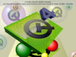

Qt OpenGL Examples

These examples describe how to use the Qt OpenGL module.
Qt provides support for integration with OpenGL implementations, giving developers the opportunity to display hardware accelerated 3D graphics alongside a more conventional user interface.
These examples demonstrate the basic techniques used to take advantage of OpenGL in Qt applications.
The 2D Painting example shows how QPainter and QOpenGLWidget can be used together to display accelerated 2D graphics on supported hardware. | |
Shows how to manually rotate a textured 3D cube with user input. | |
The Hello GL2 example demonstrates the basic use of the OpenGL-related classes provided with Qt. | |
Demonstrates OpenGL ES 3.0 functions via QOpenGLExtraFunctions. | |
This example shows how to create a minimal QWindow based application for the purpose of using OpenGL. | |
This example shows how to create a minimal QOpenGLWidget based application with stereoscopic rendering support. | |
The Textures example demonstrates the use of Qt's image classes as textures in applications that use both OpenGL and Qt to display graphics. |